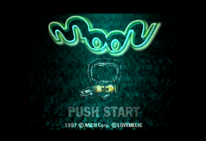
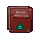

01 · 한글로 시작하기
한글패치
PS1 · Nintendo Switch · Steam macOS/Windows용 패치와 적용 안내를 확인하세요.
러브를 모으고, 사람들의 하루를 따라가 보세요.
한글패치와 플레이 중 찾아보는 공략을 준비했습니다.

PS1 · Nintendo Switch · Steam macOS/Windows용 패치와 적용 안내를 확인하세요.

요일별 일정, 러브 이벤트, 애니멀과 MD 수집을 살펴보세요. 진행도 저장과 스포일러 가림을 지원합니다.